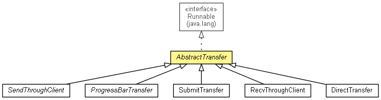

org.waarp.openr66.client
Class AbstractTransfer
java.lang.Object
 org.waarp.openr66.client.AbstractTransfer
org.waarp.openr66.client.AbstractTransfer
- All Implemented Interfaces:
- Runnable
- Direct Known Subclasses:
- DirectTransfer, ProgressBarTransfer, RecvThroughClient, SendThroughClient, SubmitTransfer
public abstract class AbstractTransfer
- extends Object
- implements Runnable

Abstract class for Transfer operation
- Author:
- Frederic Bregier
|
Method Summary |
protected static boolean |
getParams(String[] args,
boolean submitOnly)
Parse the parameter and set current values |
protected DbTaskRunner |
initRequest()
Initiate the Request and return a potential DbTaskRunner |
| Methods inherited from class java.lang.Object |
clone, equals, finalize, getClass, hashCode, notify, notifyAll, toString, wait, wait, wait |
| Methods inherited from interface java.lang.Runnable |
run |
logger
protected static volatile org.waarp.common.logging.WaarpInternalLogger logger
- Internal Logger
_INFO_ARGS
protected static String _INFO_ARGS
NO_INFO_ARGS
protected static final String NO_INFO_ARGS
- See Also:
- Constant Field Values
future
protected final R66Future future
filename
protected final String filename
rulename
protected final String rulename
fileinfo
protected final String fileinfo
isMD5
protected final boolean isMD5
remoteHost
protected final String remoteHost
blocksize
protected final int blocksize
id
protected final long id
startTime
protected final Timestamp startTime
rhost
protected static String rhost
localFilename
protected static String localFilename
rule
protected static String rule
fileInfo
protected static String fileInfo
ismd5
protected static boolean ismd5
block
protected static int block
nolog
protected static boolean nolog
idt
protected static long idt
ttimestart
protected static Timestamp ttimestart
dateFormat
protected static SimpleDateFormat dateFormat
AbstractTransfer
public AbstractTransfer(Class<?> clasz,
R66Future future,
String filename,
String rulename,
String fileinfo,
boolean isMD5,
String remoteHost,
int blocksize,
long id,
Timestamp timestart)
- Parameters:
clasz - Class of Client Transferfuture - filename - rulename - fileinfo - isMD5 - remoteHost - blocksize - id -
initRequest
protected DbTaskRunner initRequest()
- Initiate the Request and return a potential DbTaskRunner
- Returns:
- null if an error occurs or a DbTaskRunner
getParams
protected static boolean getParams(String[] args,
boolean submitOnly)
- Parse the parameter and set current values
- Parameters:
args - submitOnly - True if the client is only a submitter (through database)
- Returns:
- True if all parameters were found and correct
Copyright © 2009-2013 Waarp. All Rights Reserved.